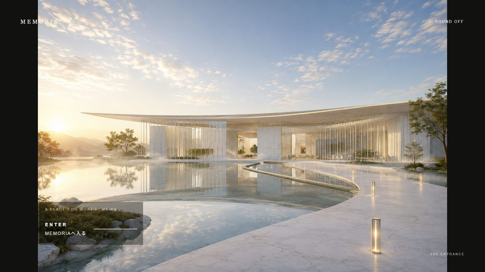

FEATURED / DIGITAL EXPERIENCE
MEMORIA v2
記憶を、もう一度訪ねられる場所へ。

記憶を並べるだけでなく、
そこへ帰るためのWebを。
- つくったもの
- 記憶を訪ねるデジタル美術館をテーマにしたWeb Experience。
- 企画・体験
- 「記憶を場所として残す」というイメージから、空間・見る順番・文字・インタラクションを設計。PCとスマートフォン、それぞれの鑑賞体験をつなぎました。
自主制作の代表作品です。購入できるMEMORIA商品は、PRODUCT GALLERYでご案内しています。